Dies ist ein städtebauliches Re-Design-Projekt für das Offenbacher Mainufer, das darauf abzielt, untergenutzte graue Infrastrukturen in einen grünen, gemeinschaftlich genutzten öffentlichen Raum zu verwandeln. Durch ein modulares Landschaftssystem wird ein organisches Zusammenspiel zwischen Natur und menschlicher Aktivität ermöglicht. Das Projekt bietet einen nachhaltigen und anpassungsfähigen Raumprototyp für zukünftige Stadtentwicklungen im Kontext des Klima- und Gesellschaftswandels.
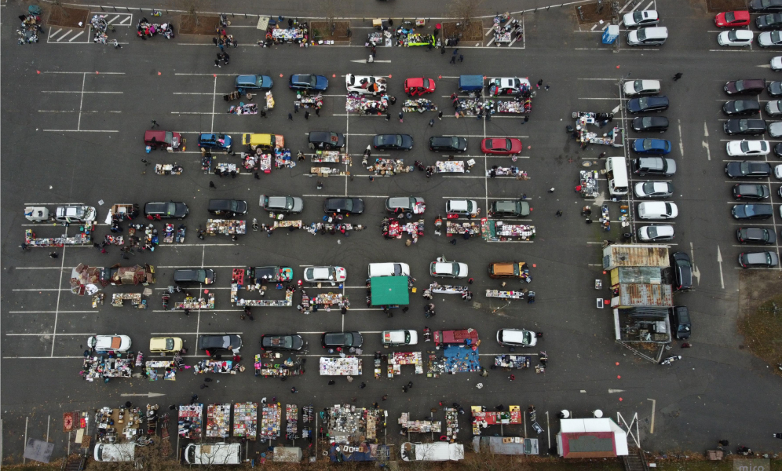
Flohmarkt am Samstag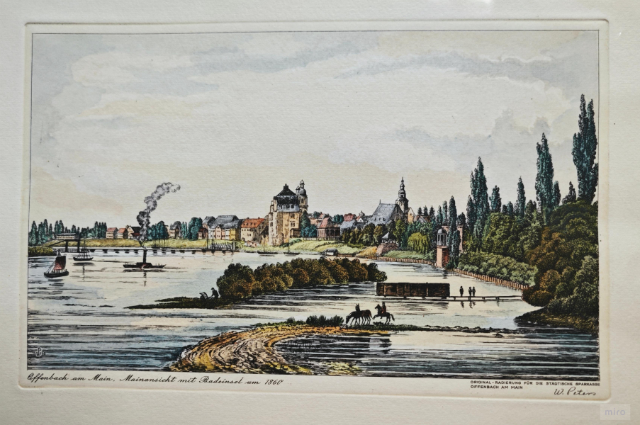
In den 1860er Jahren war der Platz fast ganz überschwemmt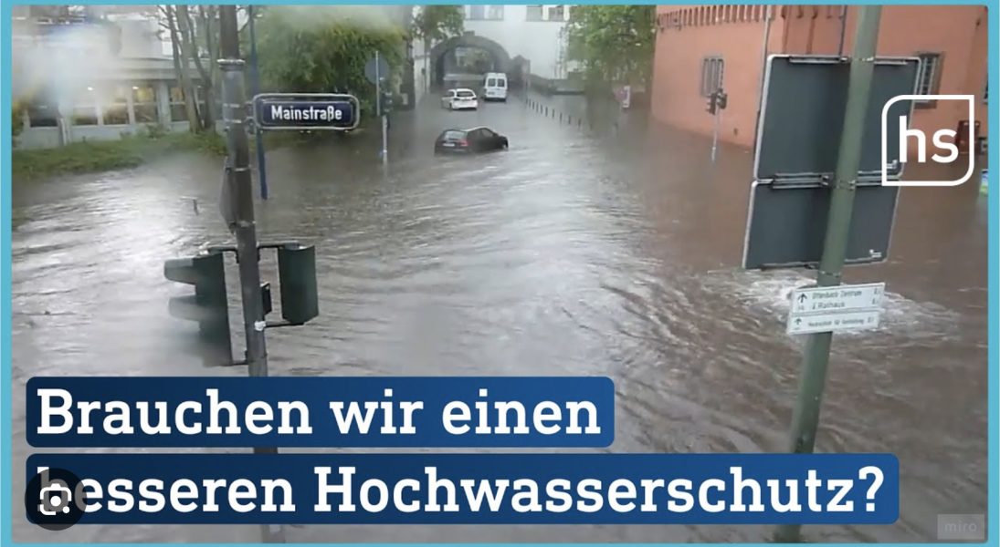
Medien fordern besseren Hochwasserschutz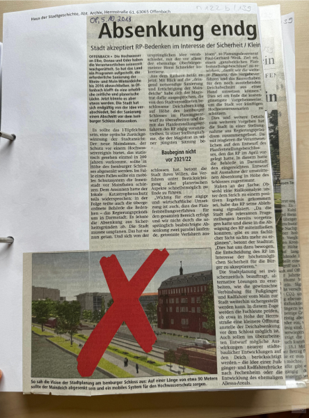
Deichabsenkung – abgelehntUm fundierte Gestaltungsentscheidungen zu treffen, haben wir die bestehende Raumnutzung und die ökologischen Spannungsfelder vor Ort analysiert. Dabei wurden zwei zentrale Problembereiche deutlich:
a. Unterauslastung der Fläche
Nur etwa 40 % der vorhandenen Parkplätze werden regelmäßig genutzt – trotz der zentralen Lage am Flussufer.
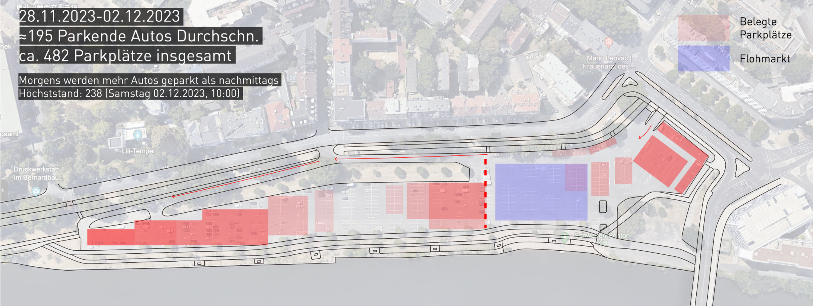
Parkraumnutzungb. Spuren des Konflikts zwischen Stadt und Natur
Abgenutzte Übergänge, beschädigte Zäune und Spuren von Überschwemmungen zeigen die Erosion der Schnittstelle zwischen menschlicher Nutzung und natürlichem Lebensraum.
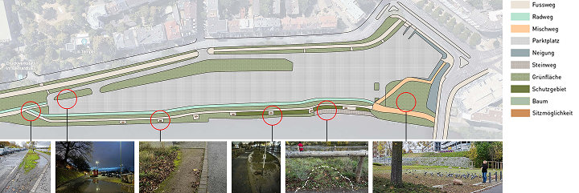
NaturrückzugNutzung trifft Struktur. Gestaltung entsteht dort, wo Bedürfnisse präzise gelesen und räumlich umgesetzt werden.
Bedarf als Ausgangspunkt
Wir haben funktionale Anforderungen und räumliche Strukturen analysiert, um sicherzustellen, dass der gestaltete Raum die vielfältigen Bedürfnisse erfüllt – sozial wie ökologisch.
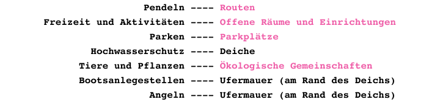
Vom Bedarf zur Struktur – Warum ein kreisförmiges Rastersystem?
Um die unterschiedlichen Nutzungsbedürfnisse – sozial, ökologisch, infrastrukturell – gleichwertig im Raum zu organisieren, entwickelten wir ein kreisförmiges Rastersystem. Es bricht mit linearen, anthropozentrischen Stadtlogiken und ermöglicht eine neue Lesbarkeit der Übergänge zwischen Mensch, Raum und Ökologie.
Das runde Raster ist nicht hierarchisch, sondern offen, adaptiv und ökologisch inspiriert:
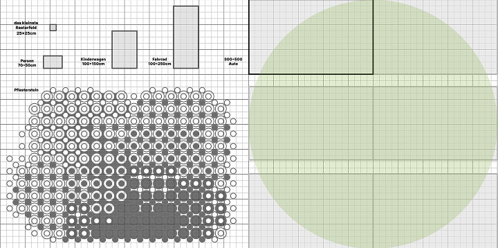
Gestaltungsraster mit menschlichem Bezug. Das Grundraster basiert auf 25 × 25 cm Einheiten. Die Kreismodule (Ø 10 m) orientieren sich an Bewegungs- und Aufenthaltsmaßen.Vom Raster zur räumlichen Struktur – Ein flexibles Rastersystem als Grundlage der Raumgestaltung
Die aus dem kreisförmigen Rastersystem (Ø 10 m) abgeleitete Logik bildet die Grundlage unserer räumlichen Strategie. Auf dieser Basis wurde das Gelände in drei Hauptzonen gegliedert: Parkplatz, Park und Platz.
Diese Zonen sind nicht strikt getrennt, sondern bewusst überlagernd und durchlässig gestaltet – es entstehen Übergänge statt Barrieren. Die Dimensionierung des Rasters orientiert sich an realen Nutzergrößen wie Fußgänger*innen, Kinderwägen, Fahrrädern und Fahrzeugen. So schafft das System sowohl räumliche Orientierung als auch funktionale Offenheit, und lässt sich auf verschiedene Kontexte übertragen.
Zonierungsdiagramm
Das Raster bildet drei Hauptzonen mit fließenden Übergängen: Parkplatz, Aktivitätszone und Ökozone.
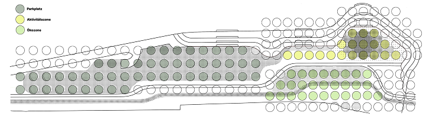
Übersichtliche Raumgliederung durch ein flexibles, modulares System.Nutzungsszenen
Die kleinteilige Rasterlogik ermöglicht Durchwegung, Aufenthalt und naturnahes Erleben innerhalb desselben Systems.
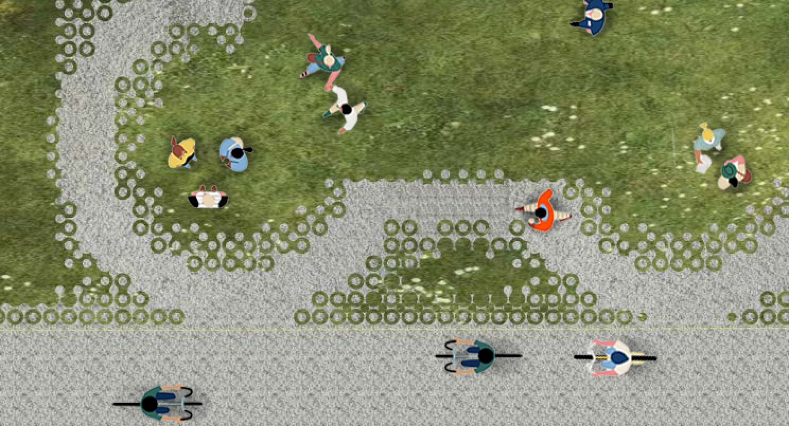
Verzahnung von Grünraum und Aktivitätsflächen in situativer Nutzung.Programmatische Vielfalt
Das Raster kann unterschiedliche soziale und funktionale Nutzungen tragen – von Spiel über Rückzug bis zur Begegnung.
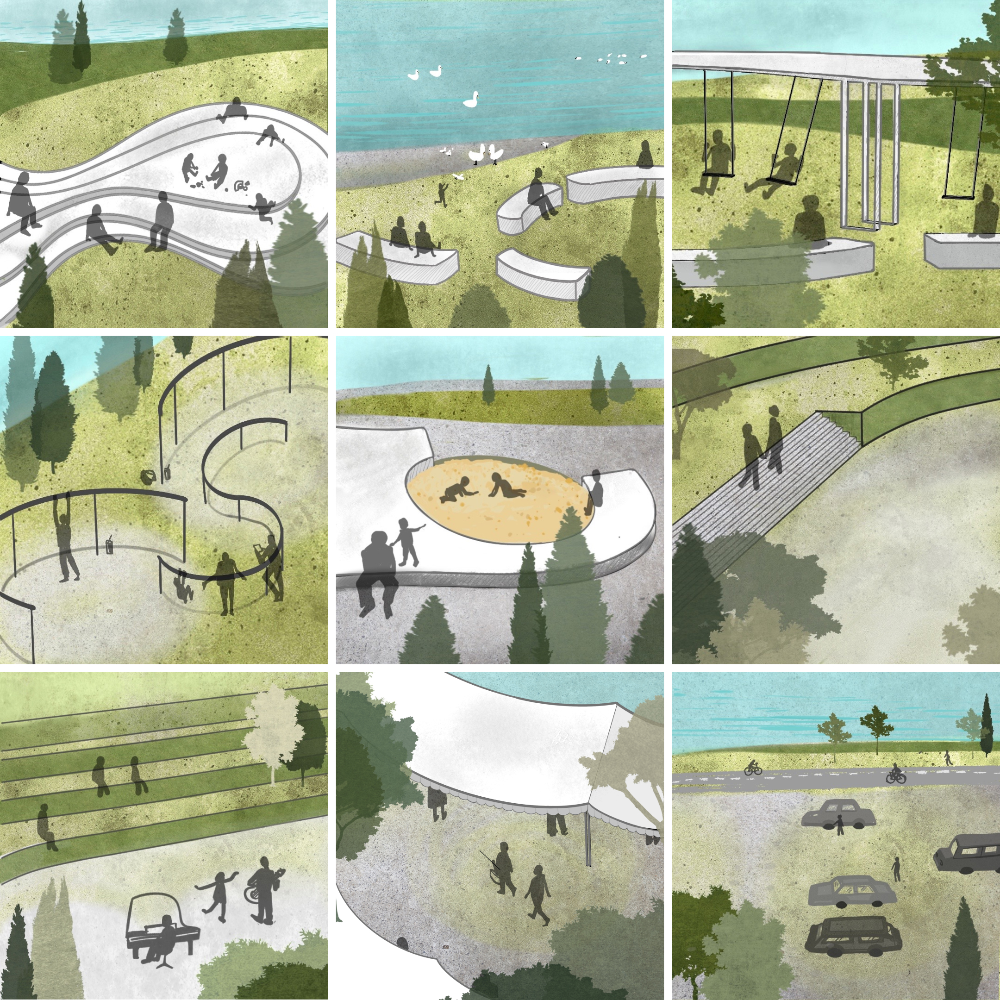
Vielschichtige Raumsituationen für verschiedene Nutzergruppen.Transformation & Anpassung
Der Raum ist nicht als fertiger Zustand gedacht, sondern als offenes System mit Entwicklungspotenzial über die Zeit.
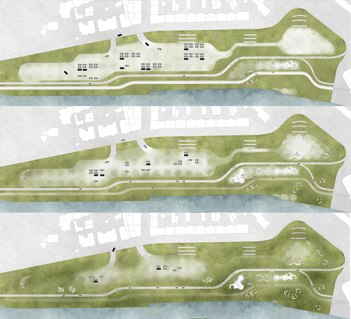
Nutzung, Vegetation und Raumverteilung verändern sich dynamisch mit dem städtischen Kontext.Vom Pflasterstein zur Systemidee
Das Pflastermodul ist nicht nur ein technisches Detail, sondern ein strategischer Entwurfsträger. Durch seine Wandelbarkeit wird es zur Schnittstelle zwischen Mikro- und Makrostruktur, zwischen temporärer Nutzung und langfristiger städtischer Transformation.
Funktional + offen + evolutionär = ein Stadtboden der Zukunft.
Modulare Logik – baubar, lesbar, wandelbar
Unsere Pflasterstruktur basiert auf einem modularen Element mit differenzierbarer Füllung. Je nach Funktion und Nutzungskontext kann das Material im Inneren variieren: Splitt für tragfähige Zonen, poröse Substrate für Regenwasserinfiltration oder Humus für Pflanzflächen. So entsteht ein Boden, der nicht abgrenzt, sondern vermittelt – zwischen Bewegung und Wachstum, Mensch und Natur.
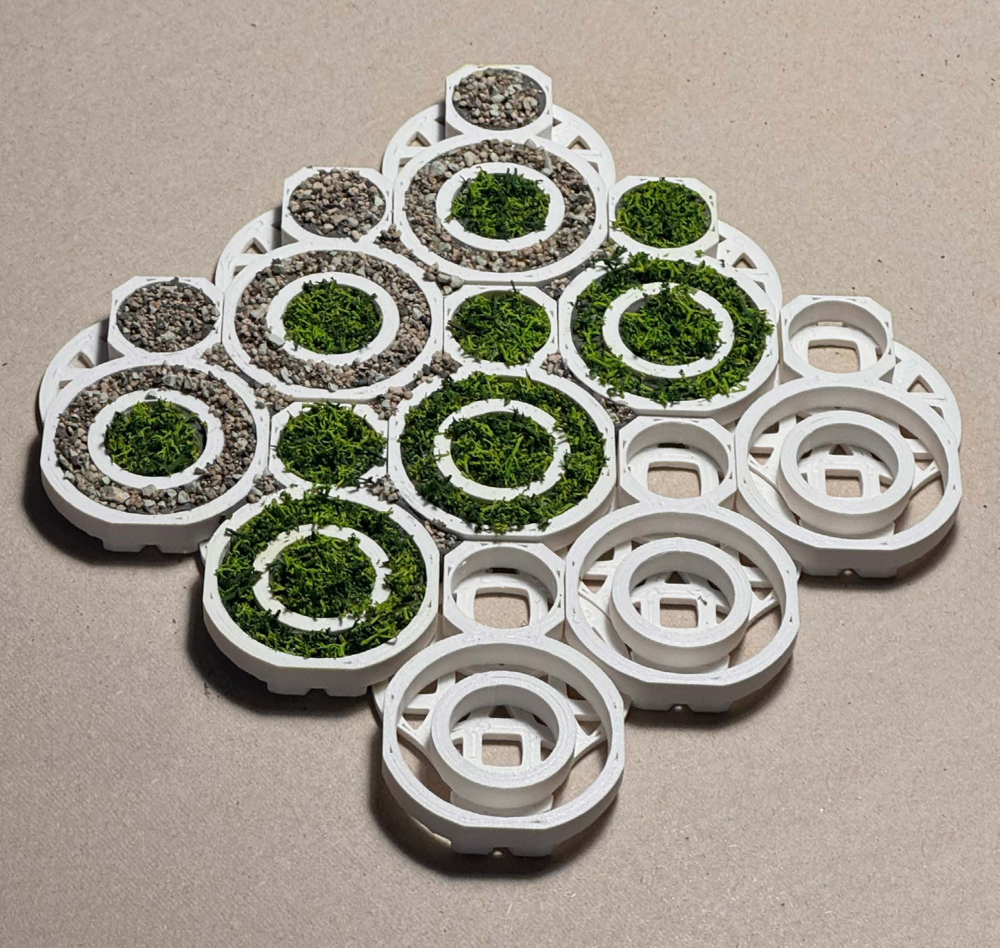
3D-gedrucktes Modell mit Materialvarianten. Wechselnde Füllstoffe schaffen fließende Übergänge.Struktur als Möglichkeitsraum
Die Elemente selbst – geometrisch einfach, aber funktional durchdacht – bestehen aus einer tragfähigen Doppelstruktur. Ihre Form erlaubt unterschiedliche Rasterkombinationen, unterschiedliche Belastbarkeiten, unterschiedliche Sichtweisen auf das, was als „Boden“ gilt.
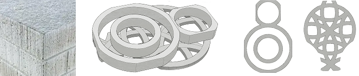
EcoRock – Material & Trägerstruktur. Robust, porös, wiederverwendbar.Vom Konzept zur physischen Erfahrung
Unser Entwurf wurde nicht nur digital, sondern auch physisch erprobt. Die Modellbauphase diente als Mittel, die räumlichen Wirkungen, Materialübergänge und Maßstabsebenen greifbar zu machen. Durch den Bau von 1:500 Parkmodellen, 1:10 Pflasterstrukturelementen und 1:1 Prototypen konnten wir überprüfen, wie sich das System verhält – in der Hand, im Raum und im Maßstab.
Dabei zeigte sich:
Was als Raster begann, wurde zum Raumkörper.
Was als Struktur gedacht war, wurde zum Medium der Erfahrung.
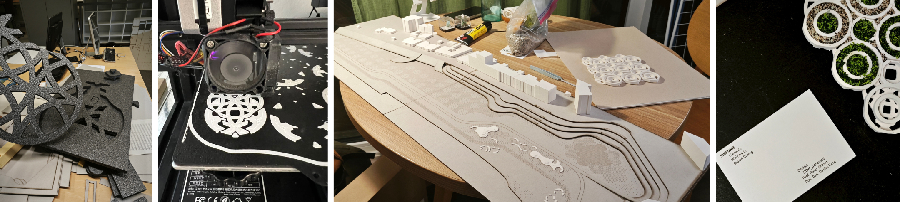
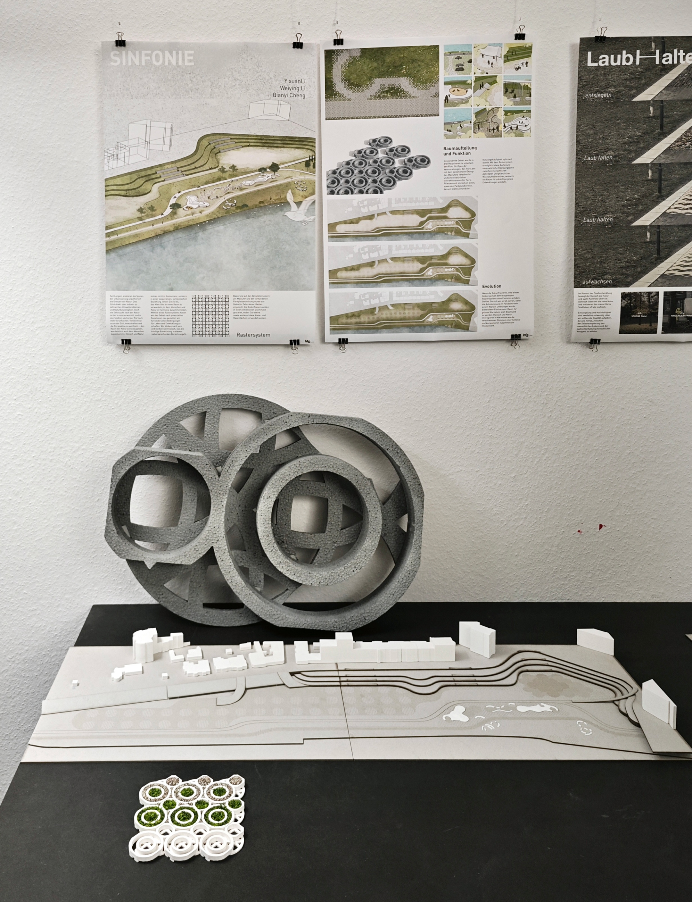
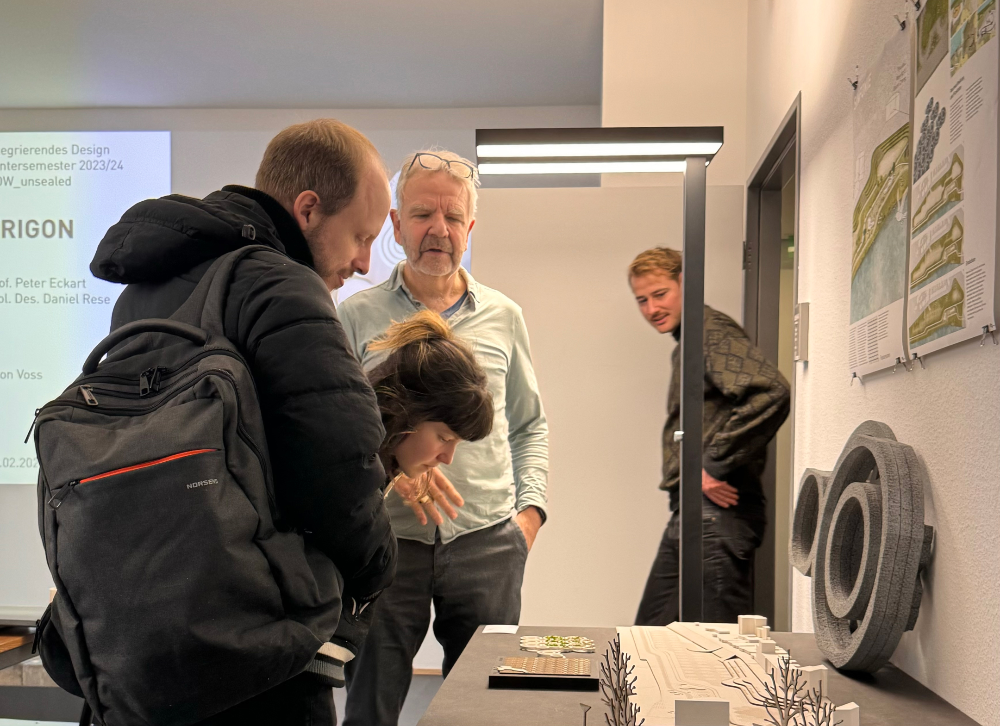
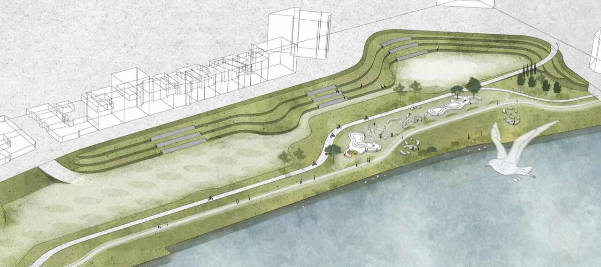